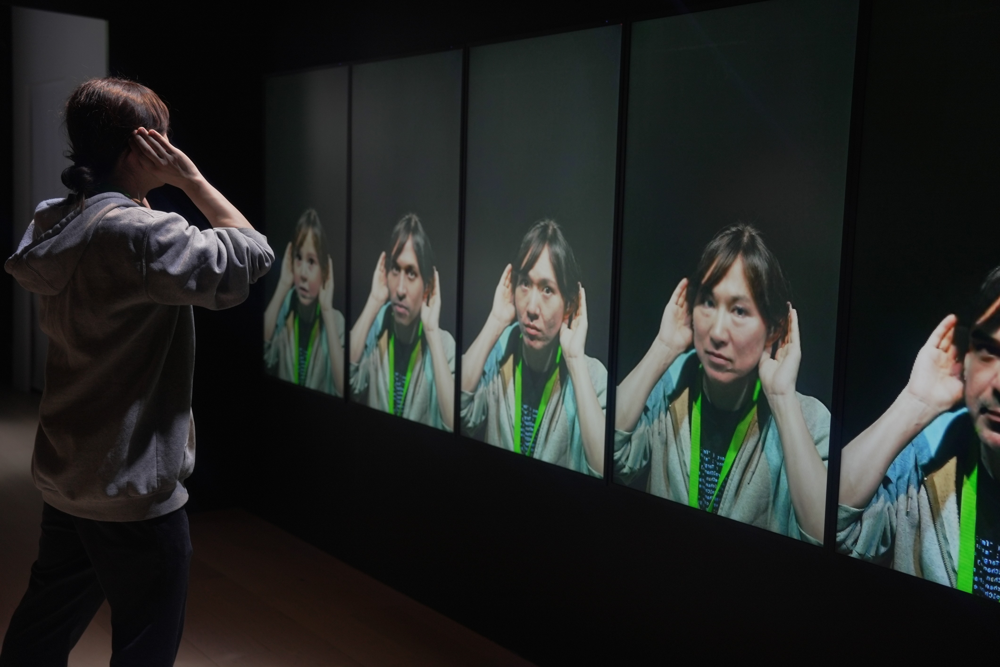
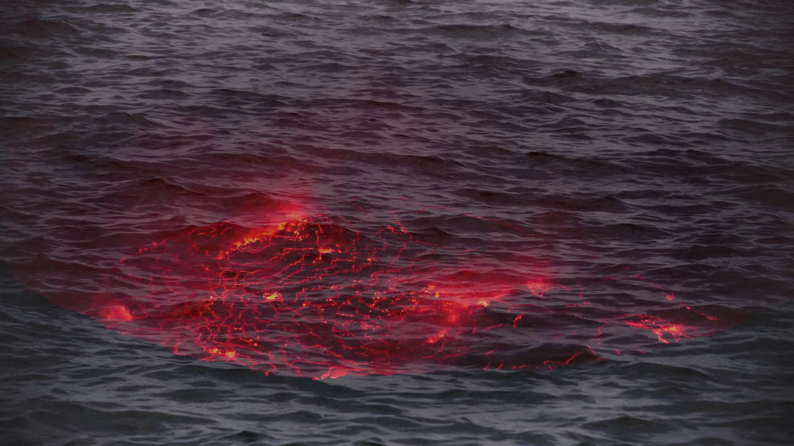
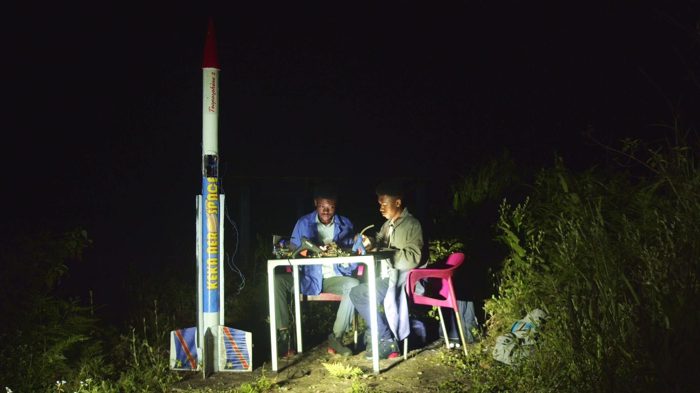

監督 川の声を聴く 2027 / 開発中 / 85 分 サンデー・イン・ジャパン 2026 / 制作中 / 85 分  ブロード・リスニング 2026 / 制作中 / 35 分 荒川キャッツ 2024 / 完成 / 7 分  アパ 2021 / 完成 / 3 分
プロデューサー  スペースマン・イン・コンゴ 2027 / 開発中 / 90 分 みんなでたどり着く 2026 / 開発中 / 15 分 ムリカ 2022 / 完成 / 14 分